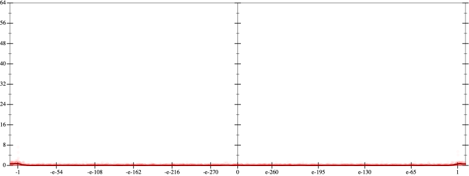
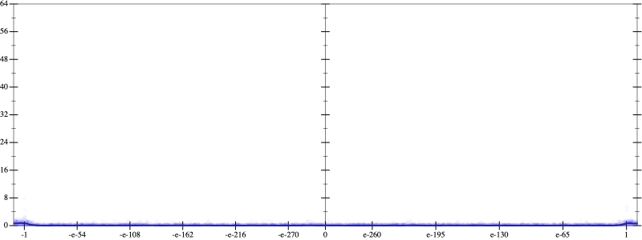
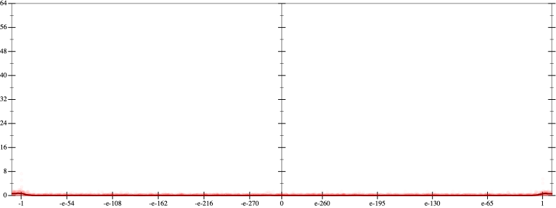
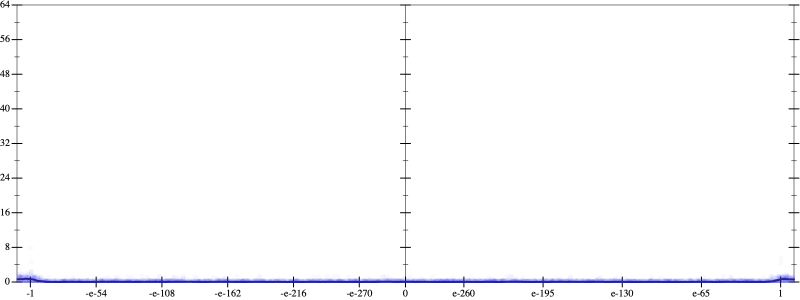
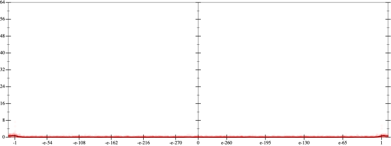
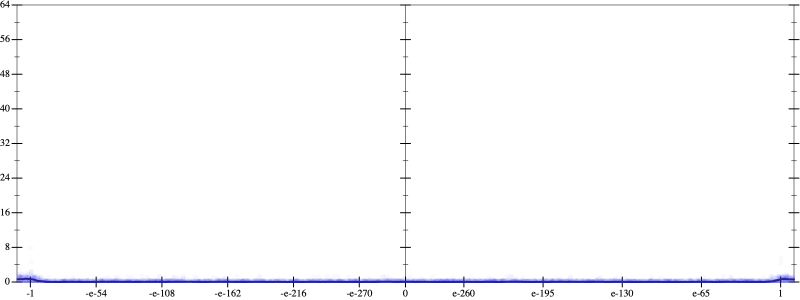

Error
 
Bits error versus x
Bits error versus x
Results
Initial program 0.0
Time bar (total: 40.5s)Debug log
herbie shell --seed 454570797
(FPCore (x)
:name "7"
:pre (and (>= x -100000000000.0) (<= x 100000000000.0))
(+ (+ (+ (* -2.1875 x) (* 19.6875 (* (* x x) x))) (* -43.3125 (* (* (* (* x x) x) x) x))) (* 26.8125 (* (* (* (* (* (* x x) x) x) x) x) x))))